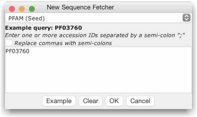

Sequence Fetcher
Jalview can retrieve sequences from a range of sequence, 3D
structure, genomic and domain family databases provided by EMBL-EBI.
The Sequence Fetcher can be opened via the "File"
menu on the main desktop in order to retrieve sequences as a new
alignment, or opened via the "File" menu of an existing
alignment to import additional sequences. There may be a short delay
when the sequence fetcher is first opened, whilst Jalview contacts each database's web API.
Every time a new fetcher is opened, you will need to select
the database you want to retrieve sequences from the database
chooser.

The databases are shown as a tree, and ordered alphabetically;
tooltips are shown if you mouse over some sources, explaining what
the database will retrieve. You can select one by using the up/down
arrow keys and hitting return, or by double clicking with the mouse.
Once you have selected a sequence database, its fetcher dialog
will open. Jalview provides two types of dialog:
- The Free-text Search Interface
Free-text
search clients are provided for PDB (Since 2.9), and UniProt
(Since 2.10). They provide access to each database's own query
system, enabling you to retrieve data by accession, free text
description, or any other type of supported field. For full
details, see each client's help page:
- Accession based sequence retrieval

To
retrieve sequences, simply enter one or more
accession ids (as a semi-colon separated list), or press the
"Example" button to paste the example accession for the
currently selected database into the retrieval box. Finally, press
"OK" to initiate the retrieval.
For the PDB and UniProt sequence fetchers, choose the "Retrieve IDs" tab
to search for accession ids.
If you use the Sequence Fetcher, please remember to cite the
corresponding services (linked to below):
- Ensembl - The
Ensembl REST API
- EMBL/EMBLCDS - Provided by the European
Nucleotide Archive's ENA Data API
Note: Versions of Jalview prior to 2.11.1.1 employed the
XML endpoint of the ENA browser, which was retired in August
2020.
- Uniprot - Free Text Search and Retrieval via the Uniprot REST API
- PDB - Free Text Search via the PDBe
REST API and retrieval via WSDbFetch
Pillai S., Silventoinen V., Kallio K., Senger M., Sobhany S., Tate
J., Velankar S., Golovin A., Henrick K., Rice P., Stoehr P., Lopez
R.
SOAP-based services provided by the European
Bioinformatics Institute.
Nucleic Acids Res.
33(1):W25-W28 (2005)
-
RFAM - a database of RNA families
-
PFAM - a database of protein families
Data is provided by the Interpro Web API